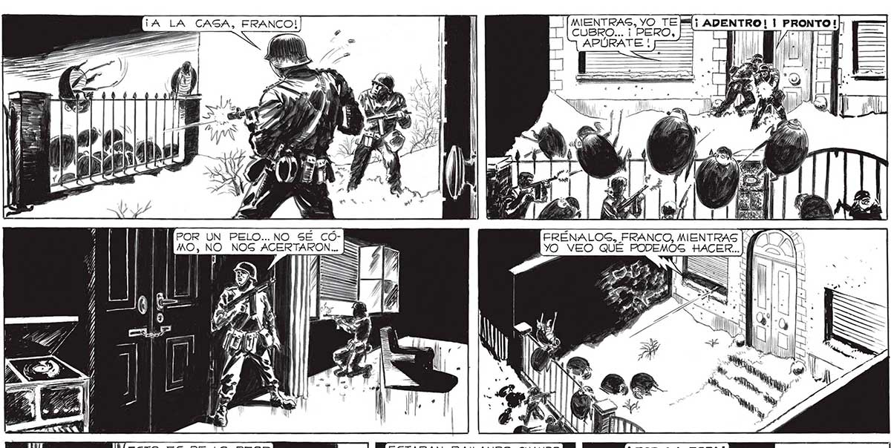
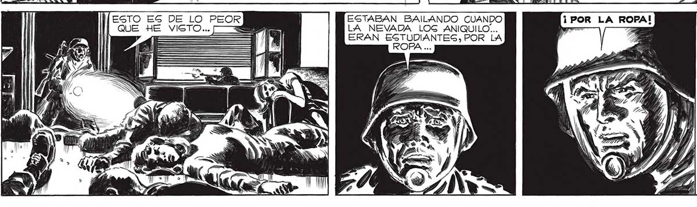

146 ¡A LA CASA, FRANCO! | [[MIENTRAS, YO TE li ADENTRO! | PRONTO!) = > ' CUBRO... "PERO, PTI HE APÚRATE : DA > 7) EiA: +3 POR UN PELO... NO SÉ CÓ- FRÉNALOS, FRANCO, MENTRAS [MA MO, NO NOS ACERTARON... ETT : IR /) SS OA == (== AHTATFIEDOS A , , 13 >, —/ . (== ., , HTTP FSA TA TS ; a, > BE, Y, » 4 / h, $ A 2 - = E . 5 - y) Pi — E ») ROSSO z ) A ESTABAN BAILANDO CUANDO LA NEVADA LOG ANIQUILO... ERAN ESTUDIANTEG, POR LA 2 ROPA ... EN EL ESBANTO DE ARO AQUEL BAILE, CONGELADO POR LA MUERTE ME DURO MUY POCO: VA ESTABA ENCALLECIDO. ADEMAS, LA ROPA DE AQUELLOS MUCHACHOS ME DABA UNA IDEA...

